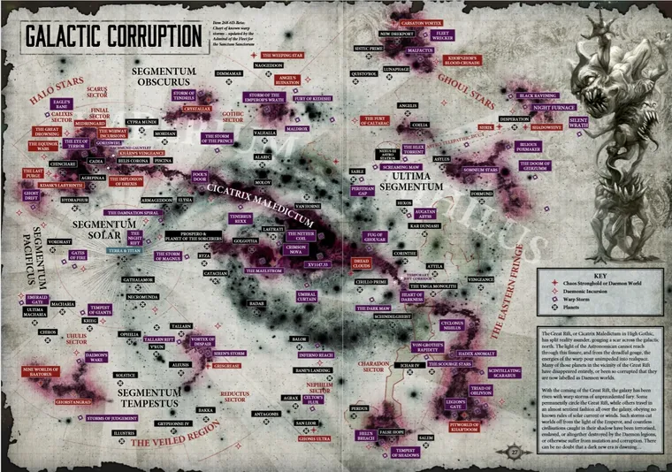
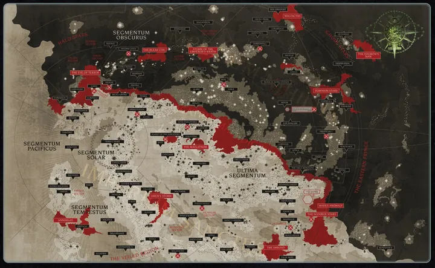

01ภาพรวม
Great Rift (เกรท ริฟต์) หรือชื่อทางการ Cicatrix Maledictum คือรอยฉีกขาดของความเป็นจริง เป็นพายุ Warp ต่อเนื่องที่พาดผ่านกาแล็กซีทั้งหมด ตั้งแต่ Eye of Terror ทางตะวันตก ไปจนถึง Hadex Anomaly ทางขอบตะวันออก
มันแบ่งจักรวรรดิออกเป็นสองส่วน:
Imperium Sanctus
ฝั่งเดียวกับ Terra ยังมองเห็นแสงนำทางของจักรพรรดิ (Astronomican) สำหรับพวกเขา Great Rift คือ "แผลเป็นสีแดงบนท้องฟ้า"
Imperium Nihilus
"จักรวรรดิแห่งความมืด" อีกฝั่งของรอยแยก แสง Astronomican ส่องไม่ถึง ดาวต้องเอาตัวรอดเอง หลายดวงหายไปหรือกลายเป็นโลกของปีศาจ — สำหรับพวกเขา รอยแยกคือ "ประตูนรก"

02อะไรทำให้เกิด Great Rift
ไม่มีใครเข้าใจที่มาของมันอย่างสมบูรณ์ แต่เหตุการณ์หลายอย่างเกิดขึ้นพร้อมกันในช่วงปลายปี 999.M41 และน่าจะเป็นปฏิกิริยาลูกโซ่:
- การล่มสลายของ Cadia — เสา Pylon ที่กด Eye of Terror ไว้หายไป (ดู Cadia ล่มสลาย)
- Magnus บุก Fenris — เวทมนตร์ของ Thousand Sons ระหว่างการแก้แค้น Space Wolves
- Craftworld Biel-Tan แตก และ การตื่นบางส่วนของ Ynnead เทพแห่งความตายของ Aeldari
- หายนะใน Webway, การแตกของกรงขังปีศาจบนดาว Amethal และการนองเลือดระหว่างจักรวรรดิกับ T'au
- บางทฤษฎียังรวมถึงการฟื้นคืนชีพของ Guilliman

03Noctis Aeterna: ความมืดนิรันดร์
เมื่อรอยแยกเปิด คลื่นพลังจิตมหาศาลแผ่ออกไปทั่วกาแล็กซี และแสง Astronomican ดับลง เหตุการณ์นี้เรียกว่า Noctis Aeterna (น็อกทิส อีเทอร์นา — "ความมืดนิรันดร์") หรือ "The Blackness"
- ดาวกว่าหนึ่งล้านดวงถูกตัดขาดจากแสงของจักรพรรดิ
- การสื่อสารทางจิตระยะไกลทำไม่ได้ เรือที่อยู่ระหว่างเดินทางใน Warp ถูกทำลายหรือหลุดออกนอกเส้นทาง
- บน Terra ความมืดกินเวลาเพียง 33 วัน แต่ที่อื่นนานหลายสิบหรือหลายร้อยปี
- เวลาบิดเบี้ยว — บางดาวผ่านไปหลายร้อยปีในพริบตา บางดาวแทบหยุดนิ่ง
- ปีศาจของ Chaos ตามมาพร้อมพายุ ตามด้วยกองเรือของ Legion ทรยศและลัทธิ Chaos
ขณะที่ท้องฟ้าของ Terra กลายเป็นสีแดง Khorne ส่งปีศาจ 88 กองทัพลงมาหน้าประตู Lion's Gate ของพระราชวัง หวังจะทำลาย Golden Throne เป็นคนแรก Guilliman ที่เพิ่งฟื้นคืนชีพนำ Primaris Space Marine, Custodes และ Sisters of Silence ตีกลับได้ก่อนปีศาจจะถึง Eternity Gate
04ราคาที่ต้องจ่าย
เมื่อแสงกลับมาและการสื่อสารฟื้นตัวบางส่วน จักรวรรดิพบว่าตัวเองอยู่ในสภาพที่แย่ที่สุดนับตั้งแต่ Age of Strife ดาวจำนวนมากหายไป บางดวงกลายเป็น Daemon World และ Chaos ได้เส้นทางที่ Abaddon เรียกว่า "Crimson Path" สู่ใจกลางจักรวรรดิ


05ยุคใหม่: Era Indomitus
- ปฏิทินใหม่ — เวลาที่บิดเบี้ยวทำให้ปฏิทินเก่าใช้ไม่ได้ Guilliman สั่งให้นับเวลาใหม่โดยใช้การเปิดของ Great Rift เป็นจุดเริ่ม ยุคปัจจุบันจึงมักระบุแค่ "M42" ไม่มีปีที่แน่นอน
- Psychic Awakening — พลัง Warp ที่ทะลักเข้ามาทำให้ psyker เกิดใหม่มากขึ้นมหาศาลและแรงขึ้นทั่วกาแล็กซี บางคนเรียกว่า "Age of Witches"
- Indomitus Crusade — Guilliman เริ่มสงครามครูเสดใหญ่เพื่อกอบกู้จักรวรรดิ (ดู Indomitus Crusade)
- Nachmund Gauntlet — เส้นทางผ่านรอยแยกที่ค่อนข้างปลอดภัยเพียงไม่กี่เส้น กลายเป็นจุดที่ทุกฝ่ายแย่งชิง เช่นที่ดาว Vigilus
- Commander Dante แห่ง Blood Angels ได้รับแต่งตั้งเป็น Lord Regent of Imperium Nihilus ปกครองอีกฝั่งของรอยแยกแทน Guilliman
สำหรับ Ork รอยแยกคือ "Gork's Grin" — ปากที่อ้ากว้างของเทพ Gork กำลังกลืนดวงดาว Ork ที่ฉลาดอธิบายว่า Gork กำลัง "อ้วก" พวก Chaos ออกมาเพื่อให้ Ork ได้สู้ ส่วนเผ่าที่ดาวถูกกลืนก็แค่ "อ่อนลงไปหน่อย" จน Gork ต้องเตะให้ออกไปรบ
06แหล่งข้อมูลและหมายเหตุ
เนื้อหาหน้านี้สรุปและแปลเป็นภาษาไทยจากบทความใน Warhammer 40k Wiki (Fandom) ซึ่งเรียบเรียงจากหนังสือ Codex, หนังสือชุด Horus Heresy ของ Forge World และนิยาย Black Library ด้านล่างนี้ (ตรวจสอบ ต.ค. 2026)
เนื้อเรื่อง Warhammer ถูกเขียนเพิ่มและแก้ไขมาตลอดหลายสิบปี ปี จำนวน และรายละเอียดบางจุดต่างกันไปตามหนังสือแต่ละเล่ม หน้านี้ใช้ฉบับที่แหล่งอ้างอิงส่วนใหญ่ยอมรับ และบอกไว้เมื่อมีหลายฉบับ